C'est LE bâtiment qui permet de recruter des soso, contre des pièces.
En fonction du niveau de la caserne, on a accès à différents soso :
C'est LE bâtiment qui permet de recruter des soso, contre des pièces.
En fonction du niveau de la caserne, on a accès à différents soso : 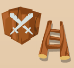
Soldats & enginsC'est un peu la base dans gge, vu que sans il y aurait pas d'attaque ou de défense possible, pas de pillage, pas de pts de gloire/pts d'honneur, etc... Sans engins, il y aurait pas vraiment de défense, plus de soso perdus par attaques...
Les trois bâtiments majeurs sont :
Il y a plusieurs réponses possible ppour cette question :
C'est LE bâtiment qui permet de recruter des soso, contre des pièces.
En fonction du niveau de la caserne, on a accès à différents soso :
Il est bien évidemment possible d'acheter des soso via la boutique de gge ou contre des rubis. Pour éviter de dépenser trop de ruru, il faut pomper un max sur les alternatives ci-dessous :
Compléter la quête de l'espion dans les royaumes (rénégats des glaces/sables/fournaise) ou celle des chevaliers errants rapporte 80 soso mêlée et 80 soso distance plus des engins. Ces soso sont aussi disponibles dans le cas des royaumes à l'échange dans les villages, minimumu lvl 2. Lorsque les villages sont au moins lvl 3, il est poissible d'acquérir des soso de meilleure qualité. Ce n'est pas forcément la meilleure façon de dépenser les ressources de royaumes, mais ça reste une possibilité (voir ressources des royaumes).
C'est le lieu idéal pour acheter des sosos (voir maître-forgeron). contre des pièces d'argent, monnaie de LTPE, des ducats, des sceat, et autres monnaie du jeu. En fonction de l'avancement du joueur, il lui sera proposé des soso "classiques" (bouffe), des soso hydro et boeuf si débloqués. En plus des soso, il est aussi possible d'acheter des engins.
Les boutiques d'event sont un bon moyen d'acquérir des soldats spéciaux (voir nomades et/ou samou). Il y a aussi des quêtes, et de rares fois des offres de gge.
Il arrive que la roue de la fortune tombe sur l'icône soldat. En récompense, il y a donc des soso. Pour la roue des richesses inimaginables, les récompenses sont juste plus importantes en nombre et parfois en qualité.
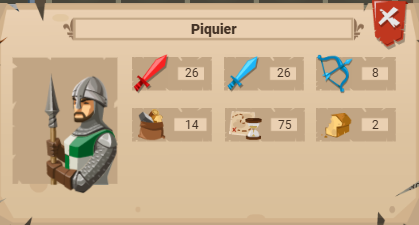
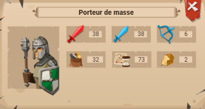
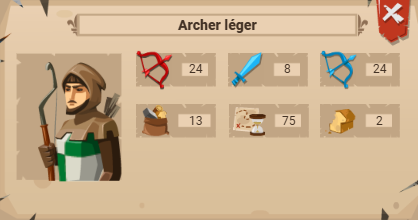
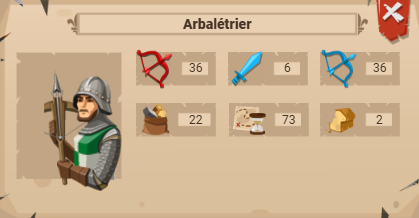
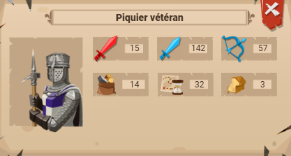
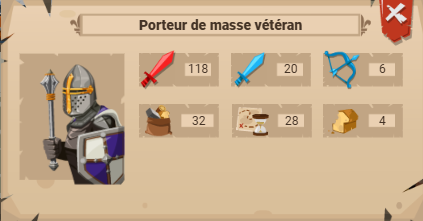
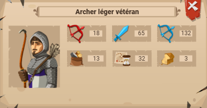
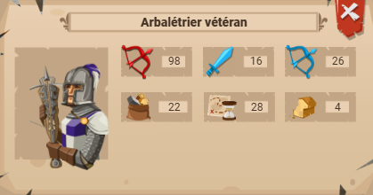
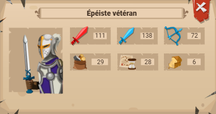
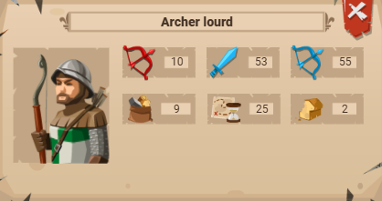
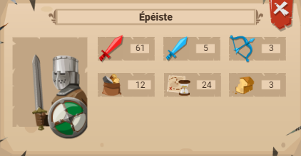
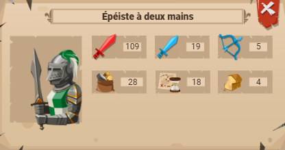
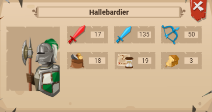
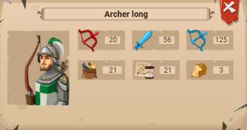
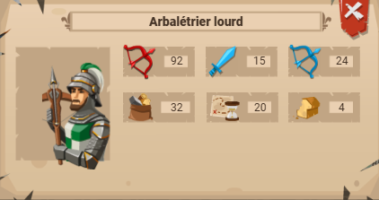
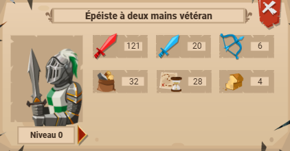
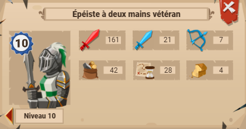
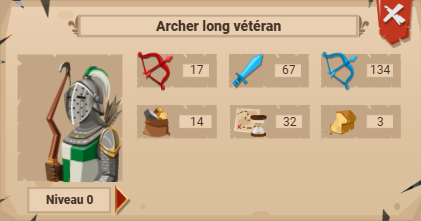
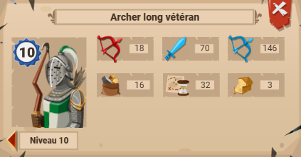
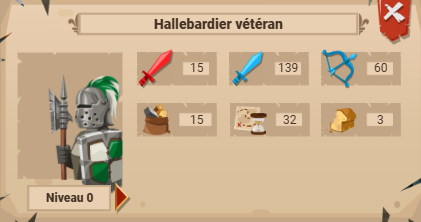
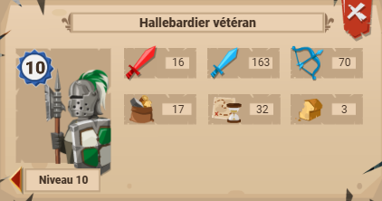
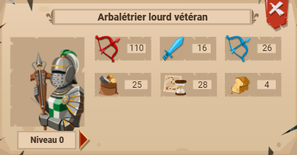
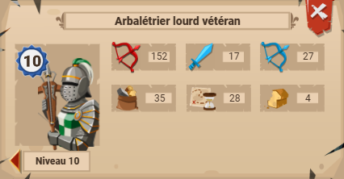
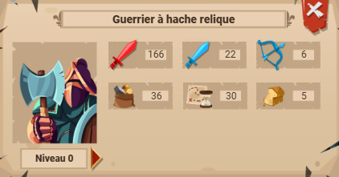
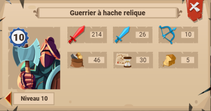
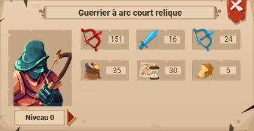
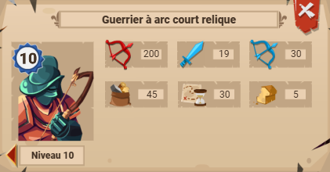
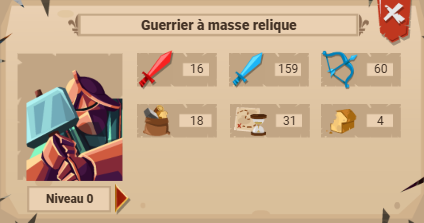
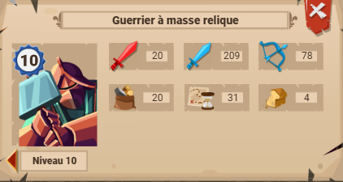
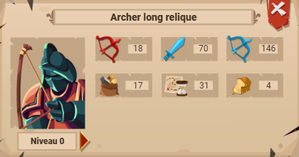
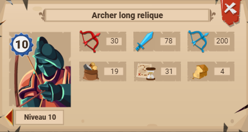
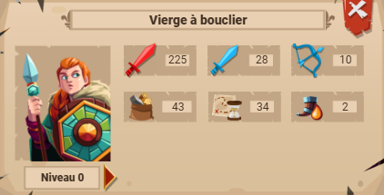
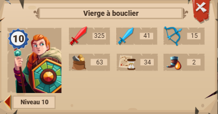
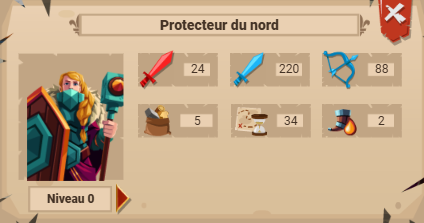
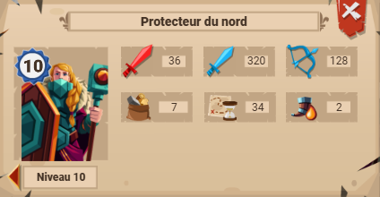
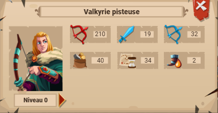
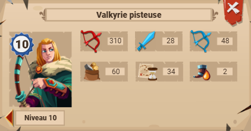
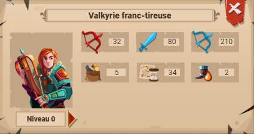
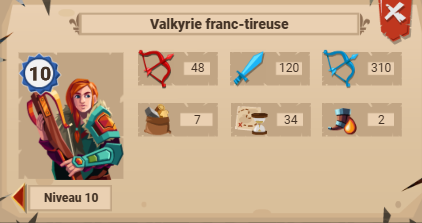
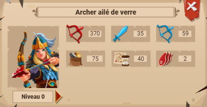
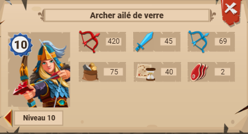
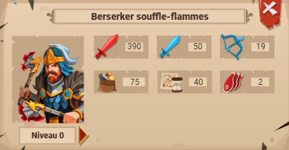
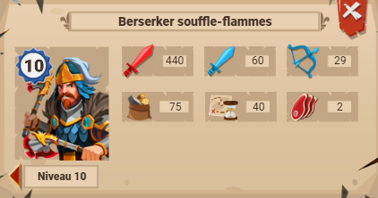
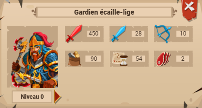
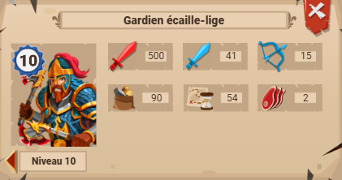
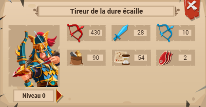
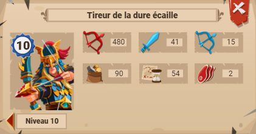
Pour ce qui est des engins, les bâtiments les plus importants sont bien évidemment :
Améliorer le niveau des ateliers débloque de nouveaux engins et accroît la vitesse de production des engins. Améliorer les ateliers jusqu'au niveau 3 dépend du niveau du joueur, et coûte du boi/pierre. Pour pasesr au niveau 4 et débloquer des engins plus puissants, il faut effectuer des recherches dans la salle des légendes. Les engins débloqués au niveau 4 des ateliers combient parfois deux effets : protection des douves et force des soso de mêlée pour les mines marines.
Les propriétés et effets des engins peuvent être améliorées de plusieurs manières :
Les effets de certains équipements réduisent/augmente la protection des murs/porte/douves.
Suivants les généraux, les effets diffèrent mais il y a toujours des effets sur les défenses ou en attaque (protection murs/porte/douves).
Parmis les compétences légendaires (défense/attaque) il y en a qui augmente la protection du mur/douve/porte :
D'autres compétences vont réduire la protection des défenses :
Comme pour la caserne, les ateliers débloquent des engins différents en fonction du niveau :
Atelier d'engins de siège :
Atelier d'engins de défense :
À noter : pour chaque engin "classique" qui peût être produit dans un atelier (lvl 1-3) il y a une version de l'engin avec un coût en bois/pierre (rocher) et une version "améliorée" avec un coût en rubis (jarre de poix brûlants).
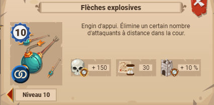
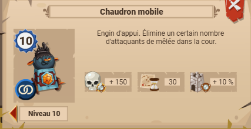